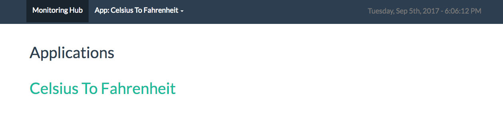
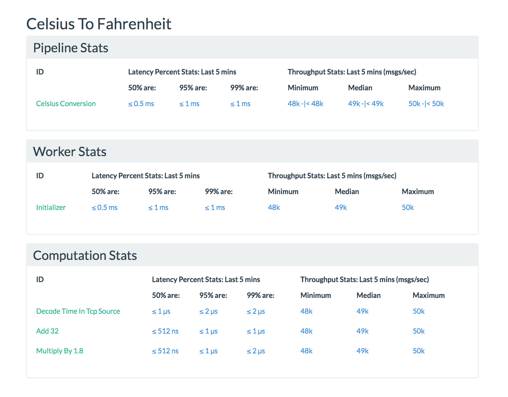
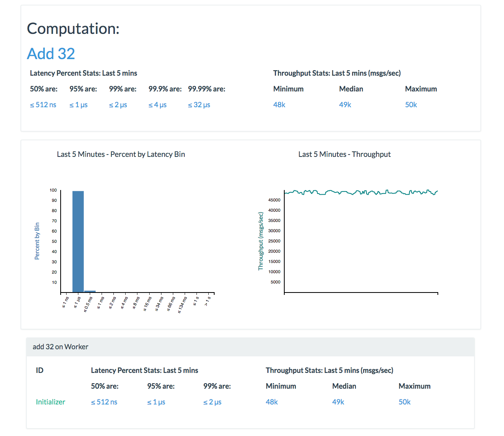

Run a Wallaroo Go Application
In this section, we're going to run an example Wallaroo application. By the time you are finished, you'll have validated that your environment is set up and working correctly. If you haven't already completed the install from source instructions or the install with Wallaroo Up instructions, please do so before continuing.
There are a few Wallaroo support applications that you'll be interacting with for the first time:
- Our Metrics UI allows you to monitor the performance and health of your applications.
- Data receiver is designed to capture TCP output from Wallaroo applications.
- Giles sender is used to send test data into Wallaroo applications over TCP.
You're going to set up our "Celsius to Fahrenheit" example application. Giles sender will be used to pump data into the application. Data receiver will receive the output, and our Metrics UI will be running so you can observe the overall performance.
The Metrics UI process will be run in the background. The other three processes (data_receiver, sender, and Wallaroo) will run in the foreground. We recommend that you run each process in a separate terminal.
Starting new shells
For each Shell you're expected to setup, you'd have to run the following to configure the Wallaroo environment:
cd ~/wallaroo-tutorial/wallaroo-release-0.5.2
source bin/activate
This command will set up the environment variables for running Wallaroo Applications.
Let's get started!
Since Wallaroo is a distributed application, its components need to run separately, and concurrently, so that they may connect to one another to form the application cluster. For this example, you will need 5 separate terminal shells to run the metrics UI, run a source, run a sink, run the Celsius application, and eventually, to send a cluster shutdown command.
Shell 1: Start the Metrics UI
To start the Metrics UI run:
metrics_reporter_ui start
You can verify it started up correctly by visiting http://localhost:4000.
If you need to restart the UI, run:
metrics_reporter_ui restart
When it's time to stop the UI, run:
metrics_reporter_ui stop
If you need to start the UI after stopping it, run:
metrics_reporter_ui start
Shell 2: Run Data Receiver
We'll use Data Receiver to listen for data from our Wallaroo application.
data_receiver --listen 127.0.0.1:5555 --no-write --ponythreads=1 --ponynoblock
Data Receiver will start up and receive data without creating any output. By default, it prints received data to standard out, but we are giving it the --no-write flag which results in no output.
Shell 3: Run the "Celsius to Fahrenheit" Application
First, we need to build the application.
cd ~/wallaroo-tutorial/wallaroo-release-0.5.2/examples/go/celsius
make
Now that we have set up the "Celsius to Fahrenheit" application, and the metrics UI and something it can send output to up and running, we can run the application itself by executing the following command:
cd ~/wallaroo-tutorial/wallaroo-release-0.5.2/examples/go/celsius
./celsius --in 127.0.0.1:7000 \
--out 127.0.0.1:5555 --metrics 127.0.0.1:5001 --control 127.0.0.1:6000 \
--data 127.0.0.1:6001 --name worker-name --external 127.0.0.1:5050 \
--cluster-initializer --ponythreads=1 --ponynoblock
This tells the "Celsius to Fahrenheit" application that it should listen on port 7000 for incoming data, write outgoing data to port 5555, and send metrics data to port 5001.
Shell 4: Sending Data with Giles Sender
We will be sending in 25,000,000 messages using a pre-generated data file. The data file will be repeatedly sent via Giles Sender until we reach 25,000,000 messages.
You will now be able to start the sender with the following command:
sender --host 127.0.0.1:7000 --messages 25000000 --binary --batch-size 300 \
--repeat --no-write --msg-size 8 --ponythreads=1 --ponynoblock \
--file ~/wallaroo-tutorial/wallaroo-release-0.5.2/examples/go/celsius/celsius.msg
If the sender is working correctly, you should see Connected printed to the screen. If you see that, you can be assured that we are now sending data into our example application.
Check Out Some Metrics
First Look
Once the sender has successfully connected, if you visit the Metrics UI, the landing page should show you that the "Celsius to Fahrenheit" application has successfully connected.

If your landing page resembles the one above, the "Celsius to Fahrenheit" application has successfully connected to the Metrics UI.
Now, let's have a look at some metrics. By clicking on the "Celsius to Fahrenheit" link, you'll be taken to the "Application Dashboard" page. On this page you should see metric stats for the following:
- a single pipeline:
Celsius Conversion - a single worker:
Initializer - three computations:
Add32,Decode Time in TCP Source,Multiply by 1.8

You'll see the metric stats update as data continues to be processed in our application.
You can then click into one of the elements within a category to get to a detailed metrics page for that element. If we were to click into the Add32 computation, we'll be taken to this page:

Feel free to click around and get a feel for how the Metrics UI is set up and how it is used to monitor a running Wallaroo application. If you'd like a deeper dive into the Metrics UI, have a look at our Monitoring Metrics with the Monitoring Hub section.
Shutdown
Shell 5: Cluster Shutdown
You can shut down the cluster with this command at any time:
cluster_shutdown 127.0.0.1:5050
You can shut down Giles Sender and Data Receiver by pressing Ctrl-c from their respective shells.
You can shut down the Metrics UI with the following command:
metrics_reporter_ui stop